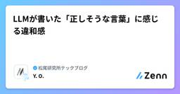

松尾研究所テックブログのフィード
https://zenn.dev/p/mkj
株式会社松尾研究所のテックブログです。
フィード

Claudian Orchestra：ObsidianとAIエージェントで作るAI時代のタスク管理（続） 1
1
松尾研究所テックブログのフィード
松尾研究所の尾崎です．25卒でデータサイエンティストをやっています．以前，「AI時代におけるタスク管理を考える」という記事を書きました．ざっくり言うと，AIに実行を「委任」して，人間は複数の作業の「中間状態」を監督することに専念すれば，マルチタスクのスイッチングコストは大幅に下げられるんじゃないか，そしてタスク管理はいずれ「人の生産性を上げるツール」と「AIを動かすインターフェース」を兼ねていくのではないか，という話でした．あの記事の宿題として，「じゃあ，その"インターフェース"の実体って，具体的に何なんだ？」という点について考えてみます．当時の自分はGeminiセントリックな環境（...
2時間前

OpenEnvとCUBEから見るAgentエコシステム標準化の動向
松尾研究所テックブログのフィード
2025年以降、エンタープライズのAI活用の議論は少しずつ変化しています。以前は「どのモデルが最も高性能か」「どのAgentフレームワークを採用すべきか」が主な関心事でした。しかしモデル性能が急速に向上した結果、最近では「業務でどう活用するか」「継続的に改善できるか」という運用面への関心が強くなっています。特に重要なのは、Agentの学習・評価を支える環境の位置づけが変わりつつあることです。従来のベンチマークは、主にモデルの性能を測るためのものでした。しかしAgent RLやpost-trainingが現実的な選択肢になりつつある現在、ベンチマークや実行環境は単なる採点ツールではあ...
3日前

Kaggleコンペ紹介：NVIDIA Nemotron Model Reasoning Challenge 3
松尾研究所テックブログのフィード
はじめにこんにちは、松尾研究所 データサイエンティストの力岡です。今回、Kaggleで開催された 「NVIDIA Nemotron Model Reasoning Challenge」 コンペに参加し、金メダルを獲得することができました。本記事では、コンペの概要と公開ベースライン、私達の取り組み、そして上位解法について紹介します。https://matsuo-institute.com/2026/06/1297/!本記事は私の理解として記述をしているため、一部に誤りや解釈の相違が含まれる可能性があります。あらかじめご了承ください。 コンペ概要https://www....
6日前

LLMが書いた「正しそうな言葉」に感じる違和感 2
松尾研究所テックブログのフィード
松尾研究所でシニアデータサイエンティストをしている大岡です。この文章はかなり整っている。それどころか内容も正しいし思考も深い。ただ、その文章を読んで「これは誰の判断なのか」と感じることがある。今回は、この違和感について整理してみたいと思います。LLMの出力はすでにかなり自然で、仕事の資料や文章にそのまま入り込める程度には整っているからこそ、単に「AIは間違えることがあるので、人間が確認しましょう」という注意喚起だけでは、私が感じている違和感には届かない気がしています。たとえば、LLMが生成した文章を、そのまま社内資料に貼る場面を考えてみます。文章は自然で、論理もそれなりに通...
7日前

gh skill でAIエージェントにAgent Skills を取り込む・公開する方法
松尾研究所テックブログのフィード
Anthropic が提唱したAgent Skillsがここ最近急速に様々なAIエージェントの機能としてのスタンダードになってきました。SKILL.md というMarkdownにフロントマターでメタ情報を書き、同じディレクトリに必要なスクリプトやテンプレートを置くというシンプルな構造で、手軽に使えることが特徴です。ただ「人が公開してくれているスキルを自分の環境に取り込む」のと「自分のスキルを配布する」のが、地味に面倒だったりします。git cloneしてディレクトリだけコピーしたり、AIエージェントによって置く場所を変えたりシンボリックリンクを貼ったりと、若干手作業が必要でした。pl...
9日前
AIコーディングではコードではなく検証プロセスをレビューする
松尾研究所テックブログのフィード
AIコーディングでは、どうしても「どれだけ速く実装できるか」に注目が集まりがちです。ただ、実務で本当に難しいのは速度そのものではなく、品質をどう安定させるかです。最近は、AIコーディングにおける品質管理を、次の4つの問いで整理しています。エージェントにどこまで検証させるか何を人間がレビューすべきかインストラクションをどう安定させるかコーディングが自動化されたあと、設計をどう扱うかこの記事では、いま実践していることを中心にまとめます。 問い1：エージェントにどこまで検証させるかレビューを減らすには、エージェントが検証できる範囲を広げる必要があります。開発における...
10日前
自分専用のAIニュースキュレーターをCodexで作って約1か月運用してみた
松尾研究所テックブログのフィード
こんにちは、松尾研究所 データサイエンスチームのマネージャーの浮田です。AI系のニュース、毎日とても多いですよね...!!論文、モデルのリリース、プロダクトのローンチ、ビジネス動向など、毎日大量のニュースが流れてきます。これらを全部丁寧に追うのはとても難しくなってきています。これまで私は、情報収集には主に以下のようなニュースレターを使っていました。https://tldr.tech/https://nlp.elvissaravia.com/しかしこれらのニュースレターには、あくまでも他人がキュレーションしたものなので、私の興味関心と全く一致するとは限らない。例えば、私は半...
21日前
【入社エントリ】長年勤めたメーカーを辞めて松尾研究所に入社した話
松尾研究所テックブログのフィード
はじめに松尾研究所に2026年4月からジョインした具利晟（ク リソン）です。愛称はドラゴンボールでお馴染みのクリリンです。由来はお気づきの通りです。現在はデータサイエンスチームのシニアデータサイエンティストとして、金融領域のLLM活用に関する開発寄りのPJT（プロジェクト）や、Agentic RLについての探索的な研究寄りの活動等に参画しています。気がつけば入社から約2ヶ月、激動の期間が閃光のように過ぎ去りました。まさに「光陰矢の如し」です。松尾研究所では、皆さん色々なタイミングで入社エントリを書いているようですが、私がこのタイミングでの執筆を決意したのは、同チームの太田幹さんと...
1ヶ月前
「LeIsaac」入門：シミュレーションでのデータ収集からポリシー学習まで
松尾研究所テックブログのフィード
はじめにこんにちは、松尾研究所でデータサイエンティストをしている力岡です。近年、ロボティクス領域におけるAIの発展が目覚ましいですが、中でもシミュレーション環境でのデータ生成と実機への移行は非常に重要なテーマになっています。今回ご紹介する 「LeIsaac」は、Hugging Faceのオープンソースライブラリ「LeRobot」と、NVIDIAのロボットシミュレータ「Isaac Sim / Isaac Lab」をうまく繋いでくれるフレームワーク で、シミュレーション上のロボットと実機をほぼ同じ手順で扱うことができます。本記事では、LeIsaac の概要やアーキテクチャの仕組みを...
1ヶ月前
社内向けAIアシスタントを3か月間試験運用してみた
松尾研究所テックブログのフィード
松尾研究所のからあげ（@karaage0703）です。松尾研究所では 2026年2月ごろから、Slack上でOpenClawライクな社内AIアシスタントソフトを、一部のプロジェクトで試験運用してきました。この記事では、AIアシスタントソフトの概要・活用例・実運用アンケート結果についてまとめたものの一部を紹介します。社内ツールの紹介ではありますが、「どのように業務でAIを活用していくか」という同じ悩みを持つ方の参考になれば幸いです。 AIを活用して業務の負荷軽減をしたい松尾研究所では、共同開発案件の数が増えるにつれてPMまわりの「情報検索」「議事録・週報の作成」「PRレビューの一...
2ヶ月前
OpenClawとHermesの違いを思想から理解する
松尾研究所テックブログのフィード
松尾研究所シニアデータサイエンティストの太田です。普段はLLMの事後学習に関するプロジェクトに携わっています。現在松尾研究所では各種業務をメンバーに代わって自律的に代行するパーソナルエージェントの社内開発に取り組んでいます。この記事ではそうした開発のなかで調査をしたOpenClawとHermesについて、思想の違いとデザインチョイスを主に共有したいと思います。!この記事のターゲットOpenClawやHermesを名前は知っているが違いがよくわからない人AIエージェントの「アーキテクチャ」（あるいは「ハーネス」）に興味がある人組織内でClaw活用を検討している人なおこの記...
2ヶ月前
質問と回答からLLMの思考過程を合成できる手法、REERの紹介
松尾研究所テックブログのフィード
はじめにこんにちは。株式会社松尾研究所インターンの髙橋彰仁です。普段は、LLMの事後学習に関連する研究開発プロジェクトに携わっています。現在、大規模言語モデルにおいては、指示に対してまず思考（thinking）を出力し、そこから最終回答を生成するReasoningモデルと呼ばれるものが主流になっています。Reasoningモデルの学習には、良質なChain-of-Thoughtデータ（思考過程のデータセット）が必要となるため、2026年現在、これらの合成方法について様々な手法が提案されています。その中でもこの記事では、ある質問と理想回答のペアに対して、中間を補う（質問から回答に...
3ヶ月前
AIエージェントの「できる」と「任せられる」の間にある壁
松尾研究所テックブログのフィード
2026年に入り、AIエージェントの性能競争はかつてない熱を帯びています。ベンチマークの数字だけを見れば『万能』に近づいているようですが、いざ業務フローに組み込むと、最後まで仕事をやり遂げてくれないもどかしさに直面するケースが増えています。なぜ、単発のタスクでは優秀なAIが、一連のプロジェクトになると急に失速してしまうのか。2025年後半から登場した実務特化型のベンチマークをもとに、課題と対策を整理してみます。なお、以下の内容は筆者の経験談ではなく、2025年から2026年にかけて公開された研究論文や技術レポートに基づく示唆であることをご留意ください。 「単発タスク」は得意になっ...
3ヶ月前
世は大環境時代 - エージェントハーネスとRL環境の展開から見えてくるもの
松尾研究所テックブログのフィード
松尾研究所の長谷です。データサイエンスチームのマネージャーを務めております。2026年に入って「ハーネスエンジニアリング」がバズワードになりました。同時に、強化学習（RL）の文脈でも「RL環境」への注目が急速に高まっています。この2つ、使われている領域は異なりますが、根っこの思想は驚くほど似ています。どちらも「モデルだけではなく、モデルを取り巻く環境の設計が成果を左右する」という認識に立っていて、さらにその環境をポータブルに共有・再利用できる仕組みが同時多発的に生まれています。この記事では、エージェントハーネスとRL環境それぞれの動向を整理しつつ、両者に共通する思想がなぜリーズナ...
3ヶ月前
松尾研究所インターン修了式2026を実施しました
松尾研究所テックブログのフィード
松尾研究所ではインターン生の修了式を実施しています。今年も、終始和やかな雰囲気の中で、これまで研究所を支えてくれたインターン生の皆さんの門出をお祝いする時間となりました🌸 修了式概要と開催意図松尾研究所では、長きにわたってAIエンジニアとして活躍してくれたインターン生の修了式を開催しました。インターン生の皆さんは、日々の研究開発やプロジェクトを通じて実践的なスキルを磨きながら、松尾研究所の活動を力強く支えてくださいました。3月は卒業や進路の変化に伴い、新たな一歩を踏み出すメンバーも多く、今回の修了式は、これまで一緒に働いてきたデータサイエンティストも集まって皆さんの門出を祝うと...
3ヶ月前
Prime Intellect Labで始めるAgentic RL ―― 4BモデルでGPT-5を超える
松尾研究所テックブログのフィード
松尾研究所の太田・尾崎です．昨今自律的な行動をとることのできるエージェントが流行っていますが，これらはLLMに外部環境との作用が可能なツールを持たせたものとみなすことができます．なのでAgentが適切に行動するにはWeb検索や書類作成等のツールを適切に利用することが必須であり，そのためには正しい指示（ツールのマニュアル）やロバストなツール設計（MCPといったプロトコル化）が重要になります．そうしたなか，ツールの利用方法を推論時にコンテキストで渡すのでなく，事後学習のタイミングであらかじめ教える「Tool/Agentic Reinforcement Learning」（以後 Agent...
3ヶ月前
DPO学習におけるバッチサイズと勾配累積がlossに与える影響を検証
松尾研究所テックブログのフィード
はじめに株式会社 松尾研究所インターンの松本です。本記事では、LLMの学習手法であるDPOにおけるバッチサイズについて扱います。DPO（Direct Preference Optimization）とは、好ましい回答（chosen）と好ましくない回答（rejected）のデータを用いて、モデルが人間にとってより望ましい応答を生成できるように学習するアライメント手法です。バッチサイズとは、1回の学習ステップで同時に処理されるデータサンプル数を指します。一般的に、バッチサイズを大きくすると勾配が安定し、学習が安定しやすくなります。一方で、バッチサイズを小さくすると勾配に分散が大...
3ヶ月前
AI時代におけるタスク管理を考える
松尾研究所テックブログのフィード
こんにちは，松尾研究所の尾崎です．25卒でデータサイエンティストをやっています．最近，AIエージェントがコードを書き，メールを要約し，会議を記録してくれる時代になりました．Claude Codeを複数同時に走らせたり，AIに調査を任せながら別の作業をしたり——気づけば，自分の仕事のやり方そのものがかなり変わってきています．しかし，そもそも「何をやるか」を管理するタスク管理そのものは，まだ従来のやり方のままという方も多いのではないでしょうか．本記事では，自分自身のタスク管理環境を紹介しつつ，AI時代に「マルチタスク」の意味がどう変わっていきそうかを考え，AIがタスク管理にどこまで関与で...
3ヶ月前
コーディングエージェントのサンドボックス技術を理解する
松尾研究所テックブログのフィード
株式会社松尾研究所の渡辺です。CodexやClaude Codeなどのコーディングエージェントは開発者のシェルとほぼ同じことができるようになっています。エージェントの中でnpm install を許可した際に、そのpostinstallスクリプトが ~/.ssh/id_rsa を読んで機密情報を外部に送信するといったことも理論上は起こりえます。このような事故を防止できるのが、サンドボックスです。本来のシステムから隔離された環境のことをサンドボックスと呼びます。本記事では、コーディングエージェントを走らせる際に、知っておくと役立つサンドボックス技術についてご紹介します。自分自身がCl...
3ヶ月前
LLM-jp FT-LLMコンペに直球ど真ん中ストレートを投げ込んだ(つもりの)話
松尾研究所テックブログのフィード
松尾研究所の尾崎です．25卒でデータサイエンティストをやっています．本記事では，LLM-jp FT-LLMコンペティションにおける我々チームの取り組みをご紹介します．NLP2026で発表した論文「LLM-jp FT-LLMコンペにおける数学推論能力向上の取り組み」（尾崎・力岡・渡部・Jeong）の内容をベースに，ブログ向けに再構成しています．このコンペは，LLM-jpが主催するファインチューニングの公開コンペティションで，llm-jp-4-8b(2026/03/23現在未公開)をベースモデルとして，中学校・高等学校レベルの数学問題500問の正答率を競うというものです．推論時にはllm...
3ヶ月前